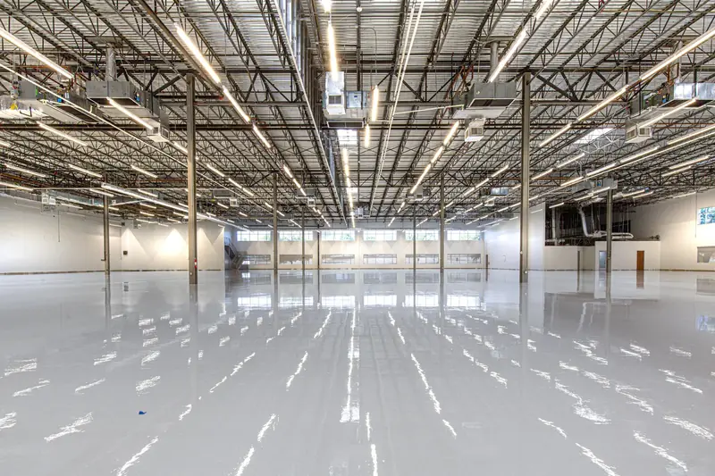

Por que o piso descola depois da lavagem com água quente
O descolamento em área de lavagem quente raramente é falha de aplicação: é diferença de dilatação entre o revestimento e o concreto.

Em frigorífico, laticínio e área de processo úmido o piso é refeito, funciona por um tempo e volta a soltar, no mesmo lugar e mais ou menos no mesmo prazo. A causa costuma não estar na mão de obra nem no lote de material.
O que a água quente faz com o piso
Lavar com água quente impõe ao piso uma variação de temperatura em poucos minutos. O concreto responde se expandindo, e volta a se contrair quando esfria. O revestimento colado sobre ele faz o mesmo, na sua própria medida.
Quando os dois materiais se movem em ritmos diferentes, a diferença se acumula na linha de colagem. Cada ciclo de lavagem soma um pouco de tensão nessa interface. O descolamento acontece quando a tensão acumulada passa do que a aderência suporta.
Isso explica por que o problema aparece primeiro perto dos ralos e nos pontos de maior temperatura, e por que ele é cíclico: o prazo até a falha é, na prática, o número de ciclos que a aderência aguenta.
Por que o reparo volta a falhar
Refazer o trecho descolado com o mesmo sistema recoloca o mesmo par de materiais sob o mesmo regime de lavagem. A conta recomeça do zero, mas é a mesma conta, e por isso o prazo até a próxima falha costuma ser parecido com o anterior.
É também por isso que aumentar a espessura do mesmo sistema ajuda pouco: o que decide não é a resistência da camada, é a compatibilidade de movimento entre ela e o substrato.
O que muda a resposta
A literatura técnica de pisos resinados aponta uma saída conhecida para esse caso: usar um sistema cujo coeficiente de dilatação térmica seja próximo ao do concreto. O poliuretano cimentício se encaixa nessa descrição: acompanha o movimento do substrato em vez de resistir a ele.
A espessura entra como consequência, não como causa: sistemas desse tipo costumam ser aplicados em camadas de alguns milímetros, que distribuem o esforço em vez de concentrá-lo numa película fina. A medição no local e a ficha técnica do fabricante dão a espessura exata de cada obra.
O que perguntar antes de refazer
- Qual a temperatura real da água na lavagem, e quantas vezes por dia?
- A falha se repete nos mesmos pontos ou é espalhada?
- Quanto tempo durou cada reparo anterior?
- O sistema especificado foi escolhido pela temperatura de lavagem ou pelo acabamento?
As três primeiras respostas costumam estar na própria manutenção, e já separam um problema de dilatação de um problema de aplicação.
A prova
4 anos sem necessidade de manutenção
Frigorífico em Amparo/SP
O cliente realizava lavagem com água a 85 °C três vezes ao dia e o piso epóxi existente descolava a cada 18 meses. Foi executado sistema de poliuretano cimentício de 9 mm. O piso está em operação há 4 anos sem necessidade de manutenção.
Veja também
- Poliuretano cimentício Para áreas onde o piso é lavado com água quente e sofre variação brusca de temperatura.
- Resíduo acumulado nas juntas: o ponto que reprova o piso em auditoria Junta e canto vivo são frestas. Numa auditoria de higiene, é por elas que o exame começa.
- Piso escorregadio onde há água, gordura ou óleo Piso liso é seguro enquanto está seco. Onde há filme de líquido permanente, a textura é que decide.